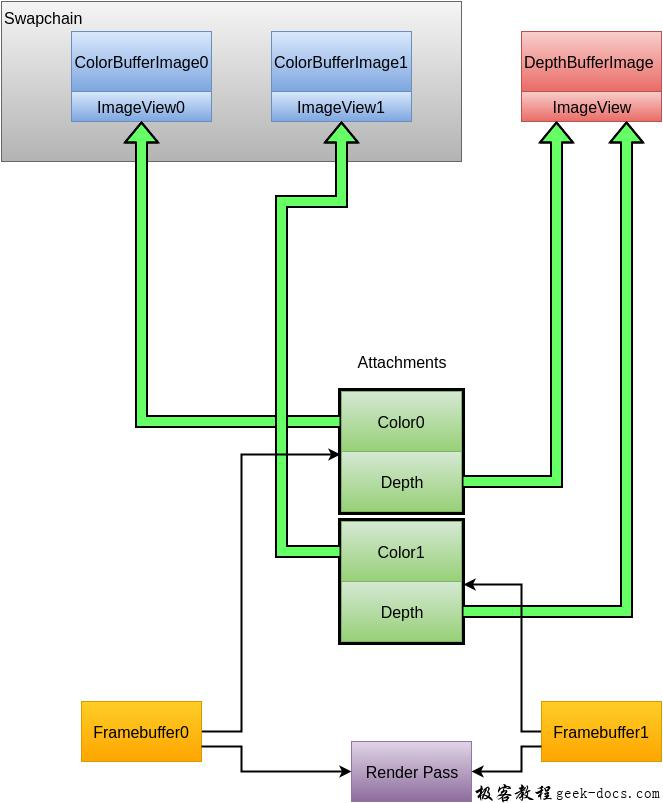

Vulkan 帧缓冲区，我们在前面的章节中已经讨论了很多次framebuffers帧缓冲区，到目前为止我们配置了render pass渲染通道并希望输出一个与交换链图像格式一致的帧缓冲区，但是我们实际上还没有创建。

在render pass创建阶段我们指定了具体的附件，并通过VkFramebuffer对象包装绑定。帧缓冲区对象引用表示为附件的所有的VkImageView对象。在我们的例子中只会使用一个帧缓冲区:color attachment。然而我们作为附件的图像依赖交换链用于呈现时返回的图像。这意味着我们必须为交换链中的所有图像创建一个帧缓冲区，并在绘制的时候使用对应的图像。
最后，在类成员中创建另一个std::vector用于保存framebuffers:
std::vector<VkFramebuffer> swapChainFramebuffers;
我们在新的函数createFramebuffers中为数组创建对象集合，这个函数在initVulkan创建完管线后调用:
void initVulkan() {
createInstance();
setupDebugCallback();
createSurface();
pickPhysicalDevice();
createLogicalDevice();
createSwapChain();
createImageViews();
createRenderPass();
createGraphicsPipeline();
createFramebuffers();
}...void createFramebuffers() {}
动态调整用于保存framebuffers的容器大小:
void createFramebuffers() {
swapChainFramebuffers.resize(swapChainImageViews.size());
}
我们接下来迭代左右的图像视图并通过它们创建对应的framebuffers:
for (size_t i = 0; i < swapChainImageViews.size(); i++) {
VkImageView attachments[] = {
swapChainImageViews[i]
}; VkFramebufferCreateInfo framebufferInfo = {};
framebufferInfo.sType = VK_STRUCTURE_TYPE_FRAMEBUFFER_CREATE_INFO;
framebufferInfo.renderPass = renderPass;
framebufferInfo.attachmentCount = 1;
framebufferInfo.pAttachments = attachments;
framebufferInfo.width = swapChainExtent.width;
framebufferInfo.height = swapChainExtent.height;
framebufferInfo.layers = 1; if (vkCreateFramebuffer(device, &framebufferInfo, nullptr, &swapChainFramebuffers[i]) != VK_SUCCESS) {
throw std::runtime_error("failed to create framebuffer!");
}
}
如你所见，创建framebuffers是非常直接的。首先需要指定framebuffer需要兼容的renderPass。我们只能使用与其兼容的渲染通道的帧缓冲区，这大体上意味着它们使用相同的附件数量和类型。
attachmentCount和pAttachments参数指定在渲染通道的pAttachment数组中绑定到相应的附件描述的VkImageView对象。
width和height参数是容易理解的，layer是指定图像数组中的层数。我们的交换链图像是单个图像，因此层数为1。
我们在图像视图和渲染通道渲染完毕之后，删除对应的帧缓冲区:
void cleanup() {
for (size_t i = 0; i < swapChainFramebuffers.size(); i++) {
vkDestroyFramebuffer(device, swapChainFramebuffers[i], nullptr);
} ...
}
我们已经达到了一个里程碑，我们拥有渲染需要的所有对象。在下一章中，我们将编写第一个实际绘制的命令。